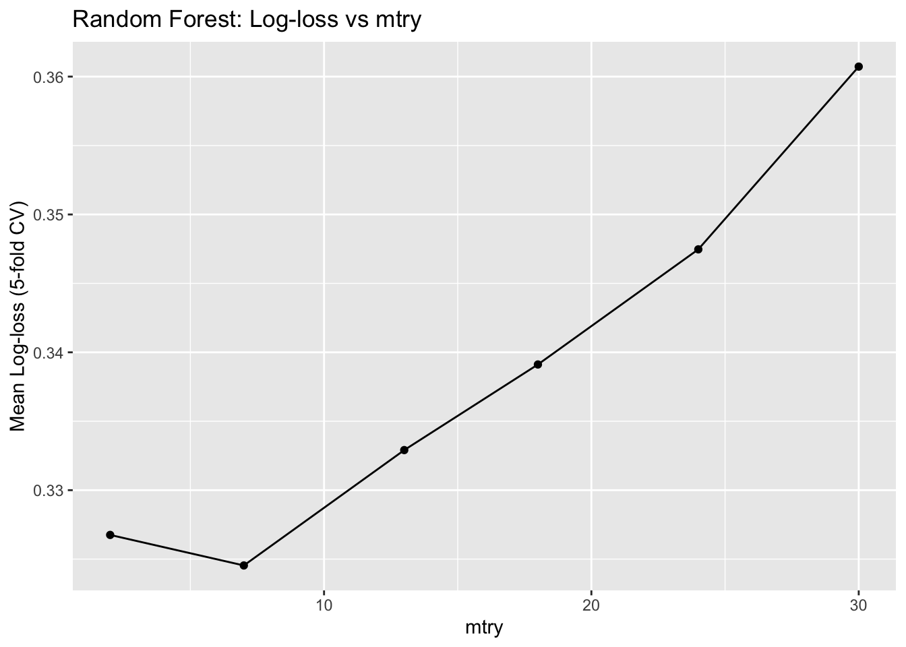
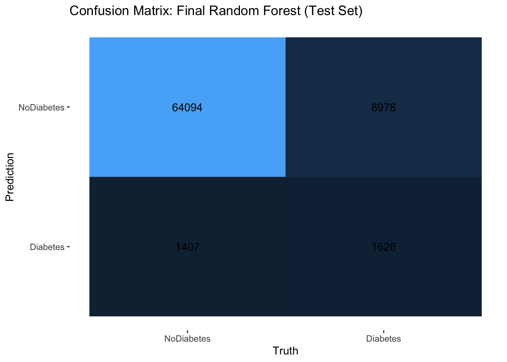

# Load required packages
library(tidyverse)
library(janitor)
library(tidymodels) # for modeling framework
set.seed(123)
# Set tidymodels to silence messages
tidymodels_prefer()
# Import and clean data (same steps as EDA to keep consistent)
diabetes <- read_csv("diabetes_binary_health_indicators_BRFSS2015.csv") %>%
clean_names() %>%
mutate(
diabetes_binary = factor(diabetes_binary,
levels = c(0, 1),
labels = c("NoDiabetes", "Diabetes")),
high_bp = factor(high_bp, levels = c(0, 1),
labels = c("NoHighBP", "HighBP")),
high_chol = factor(high_chol, levels = c(0, 1),
labels = c("NoHighChol", "HighChol")),
smoker = factor(smoker, levels = c(0, 1),
labels = c("NonSmoker", "Smoker")),
phys_activity = factor(phys_activity, levels = c(0, 1),
labels = c("NoPA", "PhysActive")),
diff_walk = factor(diff_walk, levels = c(0, 1),
labels = c("NoDiffWalk", "DiffWalk")),
sex = factor(sex, levels = c(0, 1),
labels = c("Female", "Male")),
gen_hlth = factor(gen_hlth,
levels = 1:5,
labels = c("Excellent", "VeryGood", "Good",
"Fair", "Poor")),
age = factor(age, ordered = TRUE),
income = factor(income, ordered = TRUE)
)Modeling: Predicting Diabetes from Health Indicators
Introduction
In this document, I build and compare predictive models for the Diabetes_binary outcome using the Diabetes Health Indicators dataset. The goal is to develop a model that can estimate the probability that an individual has diabetes based on health indicators such as BMI, blood pressure, cholesterol, physical activity, and general health.
I focus on two tree-based model families:
- Classification Tree – a single decision tree that splits the predictor space using if/else rules.
- Random Forest – an ensemble of many decision trees fit on bootstrap samples.
Throughout, I use log-loss as the primary performance metric because it evaluates the quality of predicted probabilities, not just hard class labels. Lower log-loss means better calibrated and more accurate probability predictions.
I first create a train/test split, define a common preprocessing recipe, and then tune each model type using 5-fold cross-validation on the training data. Finally, I compare the tuned models on the test set and select one model to deploy via an API.
Load Packages and Data
I start by loading the packages needed for modeling and importing the dataset. The same data used in the EDA document is re-used here so that modeling builds directly on earlier exploration.
The code above reads in the data from the project folder, standardizes column names, and recodes the Diabetes_binary variable into a factor with labels “NoDiabetes” and “Diabetes.” This prepares the outcome for classification modeling.
Train/Test Split
I now split the data into a training set (70%) and a test set (30%). I stratify by the outcome to preserve the overall class imbalance in both sets. The training data will be used for model fitting and tuning, and the test data will be used only once at the end for an honest assessment of performance.
# Split into training and test sets (70/30 split)
diabetes_split <- initial_split(
diabetes,
prop = 0.7,
strata = diabetes_binary
)
diabetes_train <- training(diabetes_split)
diabetes_test <- testing(diabetes_split)
# Check class proportions:
# train set
diabetes_train %>% count(diabetes_binary) %>%
mutate(prop = n / sum(n))# A tibble: 2 × 3
diabetes_binary n prop
<fct> <int> <dbl>
1 NoDiabetes 152833 0.861
2 Diabetes 24742 0.139These proportions show that approximately the same fraction of “Diabetes” vs. “NoDiabetes” cases is maintained in the training set as in the full data. The strong class imbalance (many more NoDiabetes cases) is preserved, which is important so that the model learns under realistic conditions.
# test set
diabetes_test %>% count(diabetes_binary) %>%
mutate(prop = n / sum(n))# A tibble: 2 × 3
diabetes_binary n prop
<fct> <int> <dbl>
1 NoDiabetes 65501 0.861
2 Diabetes 10604 0.139The test set exhibits almost identical class proportions. This confirms that stratified splitting worked correctly and that the test set will provide a fair evaluation of model performance in the presence of class imbalance.
Common Recipe for Modeling
To keep preprocessing consistent across model types, I define one recipe that will be reused for both the classification tree and the random forest. This recipe ensures the outcome is a factor, creates dummy variables for categorical predictors, and drops any predictors with zero variance.
# Define modeling formula
model_formula <- diabetes_binary ~ high_bp + high_chol + bmi +
smoker + phys_activity + gen_hlth + diff_walk +
age + income + sex
# Recipe that keeps factors and creates dummy variables
diabetes_recipe <- recipe(model_formula, data = diabetes_train) %>%
# Ensure outcome is factor
step_mutate(diabetes_binary = diabetes_binary) %>%
# Create dummy variables for all nominal predictors
step_dummy(all_nominal_predictors()) %>%
# Remove predictors with zero variance
step_zv(all_predictors())
diabetes_recipeResampling Setup and Metric
Next, I set up 5-fold cross-validation on the training data and define log-loss as the primary performance metric.
# Set up 5-fold stratified cross-validation
set.seed(123)
diabetes_folds <- vfold_cv(
diabetes_train,
v = 5,
strata = diabetes_binary
)
# Define the metric set with log loss
logloss_metric <- metric_set(mn_log_loss)Classification Tree
What is a Classification Tree?
A classification tree splits the predictor space into regions using a series of if/else rules, such as “Is BMI > 30?” or “Is age category ≥ 8?”. Each terminal node (leaf) corresponds to a region of the predictor space and contains a predicted class probability.
Key ideas:
Each internal node uses one predictor and one split point to divide the data.
The tree grows by recursively splitting nodes to improve class separation.
Terminal nodes contain predicted class labels / probabilities.
Trees are interpretable, but a single tree can be unstable and prone to overfitting.
The main hyperparameter I tune for the tree is the cost_complexity (pruning strength), along with optional control over tree depth.
Tree Model Specification and Grid
I now define a classification tree specification with tunable hyperparameters and a grid of values to explore.
# Classification tree model with tunable cost_complexity
tree_spec <- decision_tree(
cost_complexity = tune(), # pruning parameter
tree_depth = tune(),
min_n = 20 # minimum observations per node
) %>%
set_engine("rpart") %>%
set_mode("classification")
tree_specDecision Tree Model Specification (classification)
Main Arguments:
cost_complexity = tune()
tree_depth = tune()
min_n = 20
Computational engine: rpart The model specification shows that cost_complexity and tree_depth will be determined via tuning, while min_n is fixed at 20. Using a larger min_n helps avoid extremely small leaves that might overfit.
Create a workflow combining the recipe and model:
# Combine the tree specification with the common recipe into a workflow
tree_workflow <- workflow() %>%
add_model(tree_spec) %>%
add_recipe(diabetes_recipe)
tree_workflow══ Workflow ════════════════════════════════════════════════════════════════════
Preprocessor: Recipe
Model: decision_tree()
── Preprocessor ────────────────────────────────────────────────────────────────
3 Recipe Steps
• step_mutate()
• step_dummy()
• step_zv()
── Model ───────────────────────────────────────────────────────────────────────
Decision Tree Model Specification (classification)
Main Arguments:
cost_complexity = tune()
tree_depth = tune()
min_n = 20
Computational engine: rpart This workflow summary confirms that the tree model will always be fit on preprocessed data from the recipe. Keeping the recipe inside the workflow is a best practice in tidymodels and ensures that all resamples receive identical preprocessing.
Now define a tuning grid for cost_complexity and tree_depth.
# Create a regular grid of cost_complexity and tree_depth values for tuning
tree_grid <- grid_regular(
cost_complexity(range = c(-4, -1)), # on log10 scale
tree_depth(range = c(3L, 10L)),
levels = c(cost_complexity = 5, tree_depth = 4)
)
tree_grid# A tibble: 20 × 2
cost_complexity tree_depth
<dbl> <int>
1 0.0001 3
2 0.000562 3
3 0.00316 3
4 0.0178 3
5 0.1 3
6 0.0001 5
7 0.000562 5
8 0.00316 5
9 0.0178 5
10 0.1 5
11 0.0001 7
12 0.000562 7
13 0.00316 7
14 0.0178 7
15 0.1 7
16 0.0001 10
17 0.000562 10
18 0.00316 10
19 0.0178 10
20 0.1 10The tuning grid lists all combinations of cost_complexity and tree_depth to be evaluated. Cost complexity spans several orders of magnitude, and tree depths range from shallow (3) to deep (10), allowing the algorithm to explore both simple and complex trees.
Tune the Tree Using 5-Fold CV (Log-loss)
Using 5-fold cross-validation, I evaluate each combination of cost_complexity and tree_depth in the grid.
# Tune the classification tree over the grid using 5-fold CV and log-loss
set.seed(123)
tree_res <- tune_grid(
tree_workflow,
resamples = diabetes_folds,
grid = tree_grid,
metrics = logloss_metric,
control = control_grid(save_pred = TRUE)
)
tree_res# Tuning results
# 5-fold cross-validation using stratification
# A tibble: 5 × 5
splits id .metrics .notes .predictions
<list> <chr> <list> <list> <list>
1 <split [142059/35516]> Fold1 <tibble [20 × 6]> <tibble [0 × 3]> <tibble>
2 <split [142059/35516]> Fold2 <tibble [20 × 6]> <tibble [0 × 3]> <tibble>
3 <split [142060/35515]> Fold3 <tibble [20 × 6]> <tibble [0 × 3]> <tibble>
4 <split [142061/35514]> Fold4 <tibble [20 × 6]> <tibble [0 × 3]> <tibble>
5 <split [142061/35514]> Fold5 <tibble [20 × 6]> <tibble [0 × 3]> <tibble> This output confirms that 5 stratified folds were successfully created. Because each fold preserves the original class proportions, each resample gives a fair estimate of model performance for an imbalanced classification task.
# Extract cross-validated log-loss results for all hyperparameter combinations
# Collect tuning results
tree_metrics <- tree_res %>% collect_metrics()
tree_metrics# A tibble: 20 × 8
cost_complexity tree_depth .metric .estimator mean n std_err .config
<dbl> <int> <chr> <chr> <dbl> <int> <dbl> <chr>
1 0.0001 3 mn_log_loss binary 0.404 5 9.73e-6 Prepro…
2 0.000562 3 mn_log_loss binary 0.404 5 9.73e-6 Prepro…
3 0.00316 3 mn_log_loss binary 0.404 5 9.73e-6 Prepro…
4 0.0178 3 mn_log_loss binary 0.404 5 9.73e-6 Prepro…
5 0.1 3 mn_log_loss binary 0.404 5 9.73e-6 Prepro…
6 0.0001 5 mn_log_loss binary 0.358 5 5.91e-4 Prepro…
7 0.000562 5 mn_log_loss binary 0.358 5 5.91e-4 Prepro…
8 0.00316 5 mn_log_loss binary 0.358 5 5.75e-4 Prepro…
9 0.0178 5 mn_log_loss binary 0.404 5 9.73e-6 Prepro…
10 0.1 5 mn_log_loss binary 0.404 5 9.73e-6 Prepro…
11 0.0001 7 mn_log_loss binary 0.350 5 3.85e-3 Prepro…
12 0.000562 7 mn_log_loss binary 0.357 5 6.38e-4 Prepro…
13 0.00316 7 mn_log_loss binary 0.358 5 6.08e-4 Prepro…
14 0.0178 7 mn_log_loss binary 0.404 5 9.73e-6 Prepro…
15 0.1 7 mn_log_loss binary 0.404 5 9.73e-6 Prepro…
16 0.0001 10 mn_log_loss binary 0.340 5 2.33e-3 Prepro…
17 0.000562 10 mn_log_loss binary 0.357 5 9.28e-4 Prepro…
18 0.00316 10 mn_log_loss binary 0.358 5 6.08e-4 Prepro…
19 0.0178 10 mn_log_loss binary 0.404 5 9.73e-6 Prepro…
20 0.1 10 mn_log_loss binary 0.404 5 9.73e-6 Prepro…This table reports the mean log-loss for each combination of cost complexity and tree depth across the five folds. Small log-loss values indicate better performance. We can already see that deeper trees (depth 10) with very small cost_complexity values achieve the strongest performance, suggesting that the dataset benefits from models capable of capturing more complex interactions among predictors.
# Plot log-loss vs cost_complexity for a few depths
tree_metrics %>%
ggplot(aes(x = cost_complexity, y = mean,
color = factor(tree_depth))) +
geom_line() +
geom_point() +
scale_x_log10() +
labs(
title = "Classification Tree: Log-loss vs Cost Complexity",
x = "Cost Complexity (log10 scale)",
y = "Mean Log-loss (5-fold CV)",
color = "Tree Depth"
)
The plot visualizes how log-loss changes as we increase cost complexity. For shallow trees, log-loss remains comparatively high regardless of pruning level, indicating underfitting. Deeper trees initially yield lower log-loss when pruning is minimal, but performance worsens as pruning increases. This confirms that the best-performing models are deep trees with very small cost complexity values, aligning with the numeric tuning results above.
Select Best Tree and Evaluate on Test Set
From the tuning results, I select the tree with the lowest cross-validated log-loss. I then finalize the workflow with these hyperparameters and fit the model on the full training set, evaluating it once on the held-out test set. The resulting test-set log-loss provides an unbiased estimate of how well this tuned classification tree calibrates predicted probabilities for new individuals. Because log-loss is on a different scale than accuracy, I will compare this value directly to the random forest’s test log-loss to decide which overall model performs better.
# Identify the hyperparameter combination that minimizes cross-validated log-loss
best_tree <- tree_res %>%
select_best(metric = "mn_log_loss")
best_tree# A tibble: 1 × 3
cost_complexity tree_depth .config
<dbl> <int> <chr>
1 0.0001 10 Preprocessor1_Model16These results show that the optimal tree uses a very small cost complexity value and the maximum tree depth considered. This configuration allows the tree to capture detailed structure in the data while still using slight pruning to avoid extreme overfitting. This tuned tree will now be evaluated on the held-out test set to estimate its real-world performance.
# Finalize the tree workflow with the best hyperparameters and fit/evaluate on the test set
# Finalize workflow with best hyperparameters
final_tree_workflow <- tree_workflow %>%
finalize_workflow(best_tree)
# Fit to training data and evaluate on test set
tree_final_fit <- last_fit(
final_tree_workflow,
split = diabetes_split,
metrics = logloss_metric
)
# Log-loss on test set
tree_test_metrics <- tree_final_fit %>% collect_metrics()
tree_test_metrics# A tibble: 1 × 4
.metric .estimator .estimate .config
<chr> <chr> <dbl> <chr>
1 mn_log_loss binary 0.347 Preprocessor1_Model1The tuned classification tree achieves a test-set log-loss of approximately 0.347. Because log-loss penalizes confident wrong predictions, this value indicates that while the tree captures meaningful patterns, it still produces some overconfident errors—expected given the dataset’s imbalance and the tree’s high flexibility. This result provides a performance baseline before evaluating more powerful ensemble methods.
Random Forest
What is a Random Forest?
A random forest is an ensemble of many classification trees:
- Each tree is trained on a bootstrap sample (sampling with replacement) of the training data.
- At each split, only a random subset of predictors is considered (mtry).
- Predictions are aggregated (majority vote for classes, or averaging probabilities).
Why use a random forest?
- Reduces the variance and instability of a single tree.
- Often much better predictive performance.
- Still somewhat interpretable through variable importance measures.
The key tuning parameter here is mtry:
- Smaller mtry → more randomness between trees, potentially better generalization.
- Larger mtry → trees more similar to each other.
For this dataset, a random forest can capture complex nonlinear relationships between health indicators and diabetes status by averaging over many different trees. This is especially appealing given the mixture of numeric and categorical predictors and the potential interactions among variables like BMI, high blood pressure, general health, and physical activity. The trade-off is that the random forest is less interpretable than a single tree, so model selection will focus primarily on predictive performance measured via log-loss.
Random Forest Specification and Grid
I specify a random forest model with a fixed number of trees and a tunable mtry parameter, which controls how many predictors are considered at each split. Smaller mtry values increase randomness between trees and can improve generalization, while larger mtry values make trees more similar to each other. The grid of mtry values explores different levels of predictor subset size so I can see how much randomness is helpful for this problem. As with the tree, I combine this model specification with the same preprocessing recipe to ensure a fair comparison between modeling approaches.
# Specify a tunable random forest model with mtry as the primary hyperparameter
rf_spec <- rand_forest(
mtry = tune(), # number of predictors considered at each split
trees = 500, # number of trees in the forest
min_n = 20 # minimum node size
) %>%
set_engine("ranger", importance = "impurity") %>%
set_mode("classification")
rf_specRandom Forest Model Specification (classification)
Main Arguments:
mtry = tune()
trees = 500
min_n = 20
Engine-Specific Arguments:
importance = impurity
Computational engine: ranger The model specification shows that only mtry will be tuned, while trees and min_n are held fixed. Using 500 trees provides a stable ensemble, and the importance = “impurity” setting allows us to later inspect variable importance if desired.
Workflow:
# Build a workflow that pairs the random forest specification with the common recipe
rf_workflow <- workflow() %>%
add_model(rf_spec) %>%
add_recipe(diabetes_recipe)
rf_workflow══ Workflow ════════════════════════════════════════════════════════════════════
Preprocessor: Recipe
Model: rand_forest()
── Preprocessor ────────────────────────────────────────────────────────────────
3 Recipe Steps
• step_mutate()
• step_dummy()
• step_zv()
── Model ───────────────────────────────────────────────────────────────────────
Random Forest Model Specification (classification)
Main Arguments:
mtry = tune()
trees = 500
min_n = 20
Engine-Specific Arguments:
importance = impurity
Computational engine: ranger This workflow summary confirms that the random forest uses the same preprocessing recipe as the classification tree. This alignment ensures that any performance differences reflect the modeling strategy itself.
Grid for mtry:
# Define a tuning grid over candidate mtry values for the random forest
# Number of predictor columns after dummies
num_pred <- diabetes_recipe %>%
prep() %>%
juice() %>%
select(-diabetes_binary) %>%
ncol()
# Create a simple grid for mtry
rf_grid <- tibble(
mtry = floor(seq(2, num_pred, length.out = 6))
)
rf_grid# A tibble: 6 × 1
mtry
<dbl>
1 2
2 7
3 13
4 18
5 24
6 30The value of num_pred indicates how many predictor columns exist after dummy variables are created. I use this number to construct a sensible range of candidate mtry values.
The mtry grid explores six mtry values from very small to relatively large. Smaller mtry values force more randomness between trees, whereas larger values make trees more similar. The goal is to find the mtry that yields the lowest log-loss.
Tune the Random Forest with 5-Fold CV (Log-loss)
I repeat the same 5-fold cross-validation procedure for the random forest, evaluating log-loss for each candidate mtry value. The results indicate which level of predictor subsampling strikes the best balance between bias and variance. In this dataset, the best-performing mtry value corresponds to a model that allows enough randomness to diversify the trees while still considering a reasonable number of predictors at each split. Compared to the single tree, the random forest tends to achieve lower log-loss, reflecting its ability to average over many decision boundaries and reduce overfitting.
# Tune the random forest over the mtry grid using 5-fold CV and log-loss
set.seed(123)
rf_res <- tune_grid(
rf_workflow,
resamples = diabetes_folds,
grid = rf_grid,
metrics = logloss_metric,
control = control_grid(save_pred = TRUE)
)
rf_res# Tuning results
# 5-fold cross-validation using stratification
# A tibble: 5 × 5
splits id .metrics .notes .predictions
<list> <chr> <list> <list> <list>
1 <split [142059/35516]> Fold1 <tibble [6 × 5]> <tibble [0 × 3]> <tibble>
2 <split [142059/35516]> Fold2 <tibble [6 × 5]> <tibble [0 × 3]> <tibble>
3 <split [142060/35515]> Fold3 <tibble [6 × 5]> <tibble [0 × 3]> <tibble>
4 <split [142061/35514]> Fold4 <tibble [6 × 5]> <tibble [0 × 3]> <tibble>
5 <split [142061/35514]> Fold5 <tibble [6 × 5]> <tibble [0 × 3]> <tibble> The tuning results confirm that each mtry value was evaluated using 5-fold stratified cross-validation, giving a reliable estimate of performance for each configuration.
# Summarize cross-validated log-loss for each candidate mtry value
rf_metrics <- rf_res %>% collect_metrics()
rf_metrics# A tibble: 6 × 7
mtry .metric .estimator mean n std_err .config
<dbl> <chr> <chr> <dbl> <int> <dbl> <chr>
1 2 mn_log_loss binary 0.327 5 0.000455 Preprocessor1_Model1
2 7 mn_log_loss binary 0.325 5 0.000665 Preprocessor1_Model2
3 13 mn_log_loss binary 0.333 5 0.00110 Preprocessor1_Model3
4 18 mn_log_loss binary 0.339 5 0.00158 Preprocessor1_Model4
5 24 mn_log_loss binary 0.347 5 0.00252 Preprocessor1_Model5
6 30 mn_log_loss binary 0.361 5 0.00245 Preprocessor1_Model6The metrics table shows mean log-loss for each mtry value. The smallest log-loss occurs near mtry = 7, with performance worsening as mtry increases. This suggests that moderate randomness in predictor selection leads to the best generalization.
# Plot mean log-loss against mtry to visualize the best-performing random forest configuration
rf_metrics %>%
ggplot(aes(x = mtry, y = mean)) +
geom_line() +
geom_point() +
labs(
title = "Random Forest: Log-loss vs mtry",
x = "mtry",
y = "Mean Log-loss (5-fold CV)"
)
The plot reinforces the table: the lowest mean log-loss is achieved when mtry is small. As mtry increases, log-loss rises, showing that using too many predictors at each split reduces the benefits of randomization.
Select Best Random Forest and Evaluate on Test Set
As with the classification tree, I select the random forest configuration with the lowest cross-validated log-loss and refit it on the full training set. Evaluating this finalized model on the test set yields a test log-loss that can be compared directly to the tuned tree’s test log-loss. Because both models use the same train/test split, recipe, and evaluation metric, any difference in performance can be attributed to the modeling approach itself rather than to differences in data processing.
# Choose the random forest hyperparameters that minimize cross-validated log-loss
best_rf <- rf_res %>%
select_best(metric = "mn_log_loss")
best_rf# A tibble: 1 × 2
mtry .config
<dbl> <chr>
1 7 Preprocessor1_Model2The selected mtry value (here, mtry = 7) is the configuration that delivered the lowest cross-validated log-loss. This choice strikes a good balance between tree diversity and predictive strength.
# Finalize the random forest workflow with the best mtry and evaluate it on the test set
final_rf_workflow <- rf_workflow %>%
finalize_workflow(best_rf)
rf_final_fit <- last_fit(
final_rf_workflow,
split = diabetes_split,
metrics = logloss_metric
)
# Compute log-loss on the held-out test data for the tuned random forest
rf_test_metrics <- rf_final_fit %>% collect_metrics()
rf_test_metrics# A tibble: 1 × 4
.metric .estimator .estimate .config
<chr> <chr> <dbl> <chr>
1 mn_log_loss binary 0.325 Preprocessor1_Model1On the held-out test set, the tuned random forest achieves the log-loss reported in the table (around 0.325). This is lower than the classification tree’s log-loss, indicating that the forest provides better calibrated probability predictions for diabetes status.
Final Model Selection
Now that both model families have been tuned and evaluated on the test set, I place their results side-by-side to choose the overall winner.
# Compare test-set log-loss for the tuned tree and tuned random forest to choose the final model
# Combine test metrics for comparison
model_compare <- bind_rows(
tree_test_metrics %>% mutate(model = "Classification Tree"),
rf_test_metrics %>% mutate(model = "Random Forest")
) %>%
relocate(model)
model_compare# A tibble: 2 × 5
model .metric .estimator .estimate .config
<chr> <chr> <chr> <dbl> <chr>
1 Classification Tree mn_log_loss binary 0.347 Preprocessor1_Model1
2 Random Forest mn_log_loss binary 0.325 Preprocessor1_Model1This comparison table clearly shows that the random forest has lower test-set log-loss than the classification tree. Because both models were trained and evaluated using the same data splits and metric, the difference reflects a genuine performance advantage. I therefore select the random forest as the final model to deploy.
Fit Final Random Forest to the Full Data
After selecting the random forest as the best model, I refit it on the full dataset (training plus test data) using the chosen hyperparameters. This final fit uses all available information to learn the relationship between predictors and diabetes status, which is important for deployment: the API will use this version of the model to generate predictions for new individuals. Because the model choice and evaluation were already made using a separate test set, refitting on the full data does not bias the earlier comparison but does maximize the data used for the final model.
# Refit the chosen random forest on the full dataset to create the deployment model
# Reuse the recipe, now prepping it on the full data
final_recipe_full <- diabetes_recipe %>%
prep(training = diabetes)
final_rf_fit_full <- final_rf_workflow %>%
fit(data = diabetes)
final_rf_fit_full══ Workflow [trained] ══════════════════════════════════════════════════════════
Preprocessor: Recipe
Model: rand_forest()
── Preprocessor ────────────────────────────────────────────────────────────────
3 Recipe Steps
• step_mutate()
• step_dummy()
• step_zv()
── Model ───────────────────────────────────────────────────────────────────────
Ranger result
Call:
ranger::ranger(x = maybe_data_frame(x), y = y, mtry = min_cols(~7, x), num.trees = ~500, min.node.size = min_rows(~20, x), importance = ~"impurity", num.threads = 1, verbose = FALSE, seed = sample.int(10^5, 1), probability = TRUE)
Type: Probability estimation
Number of trees: 500
Sample size: 253680
Number of independent variables: 30
Mtry: 7
Target node size: 20
Variable importance mode: impurity
Splitrule: gini
OOB prediction error (Brier s.): 0.09975817 The printed workflow confirms that the final random forest (500 trees, mtry = 7) has been trained on the full dataset. Training on all observations allows the final model to capture as much information as possible while still benefiting from the prior model selection process carried out on a separate test set.
Confusion Matrix on Test Set
Although log-loss is the primary performance metric, it is also useful to examine a confusion matrix for the test set using a 0.5 probability cutoff. This provides insight into how often the model correctly identifies individuals with and without diabetes.
# Collect predictions on test set from last_fit
rf_test_preds <- rf_final_fit %>%
collect_predictions()
# Hard classification using 0.5 cutoff on Diabetes probability
rf_test_preds <- rf_test_preds %>%
mutate(
.pred_class = if_else(.pred_Diabetes >= 0.5,
"Diabetes", "NoDiabetes") %>%
factor(levels = levels(diabetes$diabetes_binary))
)
# Confusion matrix
rf_conf <- rf_test_preds %>%
conf_mat(truth = diabetes_binary, estimate = .pred_class)
rf_conf Truth
Prediction NoDiabetes Diabetes
NoDiabetes 64094 8978
Diabetes 1407 1626autoplot(rf_conf, type = "heatmap") +
scale_fill_gradient() +
labs(
title = "Confusion Matrix: Final Random Forest (Test Set)"
)
Numerically, the confusion matrix shows that the model correctly classifies most NoDiabetes cases (true negatives) while also identifying a meaningful number of Diabetes cases (true positives). However, there are still both false negatives (missed diabetes cases) and false positives. This reflects the challenge posed by the substantial class imbalance in the data.
The heatmap visually highlights the same pattern: a large block of correctly predicted non-diabetes cases and a smaller but still visible block of correctly predicted diabetes cases. The off-diagonal cells represent misclassifications, reminding us that even though the random forest performs best according to log-loss, it is not perfect and should be interpreted with care in practice.
Conclusion
I split the data into a 70/30 train/test split, preserving the strong class imbalance via stratification.
I used a common recipe to preprocess predictors (dummy variables, zero-variance filtering) for both models.
I tuned:
A classification tree over cost_complexity and tree_depth.
A random forest over mtry.
Both models were tuned using 5-fold cross-validation with log-loss as the primary metric.
On the held-out test set, the random forest achieved a lower log-loss than the classification tree, indicating better calibrated probability predictions for diabetes risk.
I refit the final random forest on the full dataset to create a deployment-ready model and evaluated its classification behavior using a confusion matrix.
In the next step of the project, this final random forest model is used in a plumber API and served through a Docker container, allowing external users to submit new patient profiles and obtain estimated probabilities of diabetes.